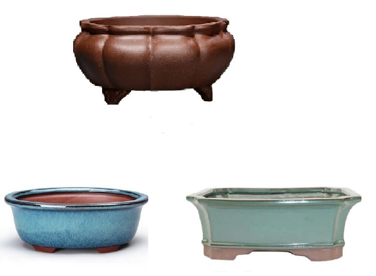

What Is The Best Type Of Pot For Your Bonsai?
It is not easy to choose a pot for a bonsai, as it is intended to be in harmony with the tree planted there. It's no use having an extraordinary tree, well pruned and potted in a weak container or in a bad condition and vice versa. Generally speaking, the vase never overlaps the tree, but it definitely makes it shine and stand out.
For this type of trees you cannot choose just any vase, such as a simple plastic vase. The art of bonsai requires that the chosen vase is a frame of excellent quality and great resistance. It must be enameled on the outside and not on the inside so that the roots can feed properly.
Be careful to check that the chosen pot has not been made with aggressive chemicals as these can be harmful to the planted tree. On the other hand, make sure the pot has small holes inside so the roots can absorb the water from the tray.
It is of the utmost importance to choose the vase for the bonsai, as a general rule the vase should give relief to the bonsai and not vice versa. Even if it is not for exhibition, it is essential to choose the right vase to present the bonsai and give it the value it deserves. The bonsai pot is part of the work without being the main element.

What Is A Bonsai Pot?
It is a clay/stoneware pot with a flat bottom to prevent water from accumulating which could cause the roots to rot.
The bonsai pot must have enough holes to allow the irrigation water to drain out and smaller holes to let the aluminum or copper wire through, essential to secure the bonsai to the pot.
When choosing the pot, we have to avoid pots with edges on the inside and that make the transplant difficult, we may be forced to break the pot at the time of the new transplant.
There are vases with and without enamel, rectangular, round, oval, slabs and many others with different shapes, handmade or industrial.
Rectangular pot
A rectangular bonsai pot will be particularly suited to strong, stocky trees with well-defined branches and vigorous vegetative stands.
Upright trunk trees adapt well to this geometry
Oval pot
An oval bonsai pot is more reminiscent of a feminine side, with delicacy and consequently will be reserved for trees with a certain elegance such as deciduous bonsai.
These are ideal for trees with curved trunks.
Round pot
A round bonsai pot can, in principle, adapt to any type of bonsai, but it is best suited for pine bonsai.
How to pick a Bonsai pot?
The first step in choosing a pot lies in the proportionality of the tree to its pot.
If the pot is too big, the bonsai may appear weaker, smaller, and the bonsai will overgrow. A pot that is too small gives the bonsai too much relief, thus losing the balance sought and making it difficult to grow.
Next, we have to consider some important aspects in aesthetics, whether the trunk is straight or not, the nature of the tree, the species. A good choice can help to highlight a contrast and enhance a feature to obtain the perfect balance of the set.
Anyway, the last step and also the most important to take into account when choosing the vase for the bonsai is the color. So it's very important to choose the coloring that will enhance the bonsai. There are numerous colors and shades.
Color is the means of communication between harmony and balance.
We use colored pots for bonsai with flowers and fruits, to contrast and highlight the flower or fruit, or for colored deciduous trees, with red, orange or yellow tones. In this case the vase helps to enhance the colors of the leaves, flowers or fruits.
The pot measurements
The tree's measurements must be evaluated according to its base. The ideal size of the vase should be 2/3 of the base measurement.
The depth of the pot
For wider and shorter trees, the depth of the pot should not exceed 2/3 of the measure of the base of the plant. In general, the proportion between the trunk and the pot should be used, but in the case of inclined bonsai (cascade type), it is necessary to use a very tall pot.
The width of the pot
You should never choose a pot that is the same width as the base of the tree so that it doesn't suffocate. The chosen pot should always be much wider than the base of the tree.
The good choice of pots for bonsai is halfway to success.
The pot is a valuable element giving grandeur and splendor to the tree without being distractive.
In short, it depends on the sensitivity of each one to observe and admire the bonsai as a work of art, in order to choose the right pot and successfully achieve the desired result. Bonsai is an art based on technical knowledge and above all on common sense, as each plant and each specimen reflects a personal expression of its author.
Here are some ideas: